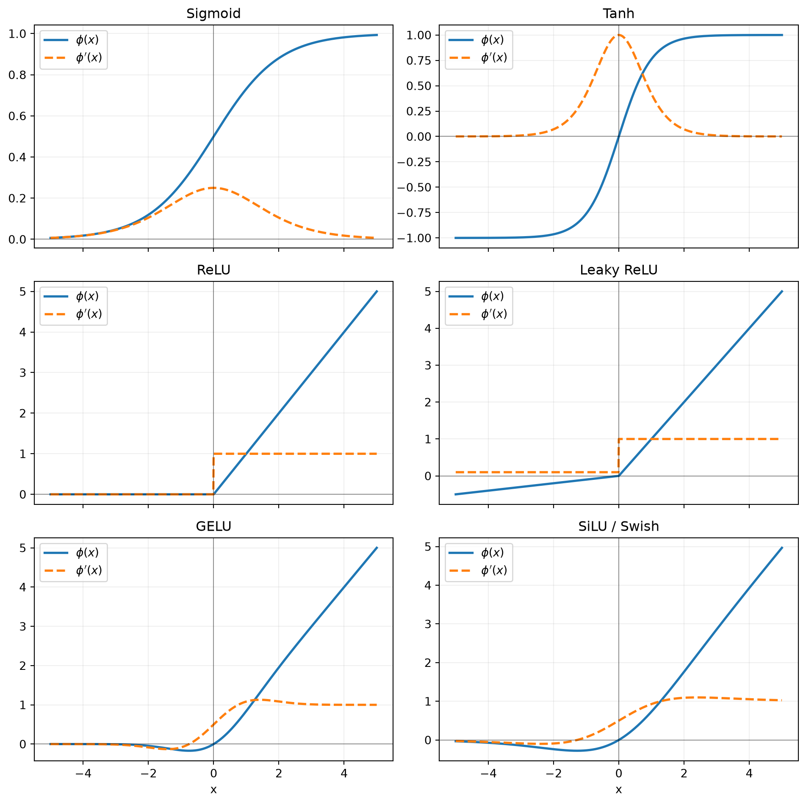

import torch
def gpt_oss_swiglu(
gate: torch.Tensor,
content: torch.Tensor,
alpha: float = 1.702,
limit: float = 7.0,
) -> torch.Tensor:
"""GPT-OSS activation before the MLP output projection."""
gate = gate.clamp(max=limit)
content = content.clamp(min=-limit, max=limit)
swish_gate = gate * torch.sigmoid(alpha * gate)
return swish_gate * (content + 1.0)Activation Functions
Why Neural Networks Need Activations
Without nonlinear activation functions, a stack of linear layers collapses into one linear transformation:
\[ W_2(W_1x+b_1)+b_2 = (W_2W_1)x+(W_2b_1+b_2). \]
For a neuron,
\[ z=w^Tx+b, \qquad h=\phi(z), \]
and backpropagation multiplies the upstream gradient by \(\phi'(z)\). An activation affects both what the network can represent and how easily it can be optimized.
What Makes a Useful Activation?
Useful properties depend on the model, but commonly include:
- nonlinearity
- useful gradients over a wide input range
- inexpensive evaluation
- stable output scale
- smoothness when optimization benefits from it
- compatibility with initialization and normalization
No activation has every desirable property. For example, bounded activations can stabilize output values but often saturate; unbounded activations preserve gradients on one side but may produce large values.
Sigmoid
\[ \sigma(x)=\frac{1}{1+e^{-x}}. \]
Its derivative is
\[ \sigma'(x)=\sigma(x)(1-\sigma(x)). \]
The derivative is at most \(1/4\) and approaches zero for large \(|x|\). Repeated multiplication by these small derivatives can produce vanishing gradients in deep networks.
Properties:
- range: \((0,1)\)
- smooth and probabilistically interpretable
- not zero-centered
- saturates at both extremes
Common use: binary probabilities and gates, rather than hidden activations in deep feed-forward networks.
Tanh
\[ \tanh(x)=\frac{e^x-e^{-x}}{e^x+e^{-x}}, \]
\[ \frac{d}{dx}\tanh(x)=1-\tanh^2(x). \]
Tanh is zero-centered and has range \((-1,1)\), but still saturates for large \(|x|\). It remains common inside recurrent-network state updates.
ReLU
\[ \operatorname{ReLU}(x)=\max(0,x). \]
Its derivative is
\[ \operatorname{ReLU}'(x) = \begin{cases} 0,&x<0,\\ 1,&x>0. \end{cases} \]
The derivative at zero is undefined; implementations choose a subgradient, typically zero.
Advantages:
- cheap to compute
- does not saturate on the positive side
- produces sparse activations
The dying ReLU problem occurs when a neuron stays in the negative region, receives zero gradient, and stops updating. Large learning rates or unfavorable bias shifts can contribute to this.
ReLU variants
Leaky ReLU retains a small negative slope:
\[ \operatorname{LeakyReLU}(x) = \begin{cases} x,&x\ge0,\\ \alpha x,&x<0. \end{cases} \]
Its derivative is
\[ \operatorname{LeakyReLU}'(x) = \begin{cases} 1,&x>0,\\ \alpha,&x<0. \end{cases} \]
As with ReLU, the derivative at zero is undefined and an implementation chooses a subgradient.
PReLU learns \(\alpha\). ELU and SELU use smooth, saturating negative branches; SELU is designed for self-normalizing networks under specific architectural and initialization assumptions.
GELU
The Gaussian Error Linear Unit weights an input by the probability that a standard Gaussian variable is below it:
\[ \operatorname{GELU}(x)=x\Phi(x), \]
where \(\Phi\) is the standard Gaussian CDF. A common approximation is
\[ \operatorname{GELU}(x) \approx \frac{x}{2} \left[ 1+\tanh\left( \sqrt{\frac{2}{\pi}} \left(x+0.044715x^3\right) \right) \right]. \]
Using the product rule and
\[ \Phi'(x)=\phi(x) = \frac{1}{\sqrt{2\pi}}e^{-x^2/2}, \]
the derivative of exact GELU is
\[ \boxed{ \operatorname{GELU}'(x) = \Phi(x)+x\phi(x) = \Phi(x) + \frac{x}{\sqrt{2\pi}}e^{-x^2/2} }. \]
Its derivative behaves like a smooth—but slightly non-monotonic—version of a ReLU derivative:
- as \(x\to-\infty\), \(\operatorname{GELU}'(x)\to0\)
- at \(x=0\), \(\operatorname{GELU}'(0)=1/2\)
- as \(x\to+\infty\), \(\operatorname{GELU}'(x)\to1\)
- it reaches approximately \(-0.129\) at \(x=-\sqrt 2\)
- it reaches approximately \(1.129\) at \(x=\sqrt 2\)
The small negative-derivative region means exact GELU is not monotonic. It has a shallow minimum near \(x\approx-0.752\) instead of simply flattening all negative inputs.
Unlike ReLU’s hard gate, GELU smoothly scales inputs. It became common in BERT- and early GPT-style Transformers.
SiLU / Swish
\[ \operatorname{SiLU}(x)=x\sigma(x). \]
Its derivative is
\[ \operatorname{SiLU}'(x) = \sigma(x)+x\sigma(x)(1-\sigma(x)). \]
SiLU is smooth and non-monotonic: slightly negative inputs can produce negative outputs, rather than being discarded completely. It is widely used in modern vision models and gated Transformer MLPs.
Gated Activations
A gated linear unit splits computation into a content path and a gate:
\[ \operatorname{GLU}(x) = (xW_u)\odot\sigma(xW_g). \]
Variants replace sigmoid with another activation. SwiGLU uses SiLU:
\[ \operatorname{SwiGLU}(x) = W_o\left[ \operatorname{SiLU}(xW_g)\odot(xW_u) \right]. \]
The gate creates multiplicative interactions: one projection controls how much of another projection passes through. The cost is an additional input projection, so hidden width is often adjusted when comparing parameter counts with an ordinary two-layer FFN.
To see where this operation appears in a decoder block, continue to SwiGLU in the Transformer feed-forward network.
GPT-OSS’s modified SwiGLU
GPT-OSS uses a numerically bounded variant rather than textbook SwiGLU. Let \(a=xW_g\) be the gate branch and \(b=xW_u\) be the content branch. Its activation can be written as
\[ \begin{aligned} \bar a &= \min(a, L),\\ \bar b &= \operatorname{clip}(b,-L,L),\\ \operatorname{SwiGLU}_{\text{GPT-OSS}}(a,b) &= \left[\bar a\,\sigma(\alpha\bar a)\right] \odot(\bar b+1), \end{aligned} \]
where GPT-OSS uses \(\alpha=1.702\) and \(L=7\). The complete MLP still applies an output projection \(W_o\) after this activation.
Compared with ordinary \(\operatorname{SiLU}(a)\odot b\), this version makes three changes:
- \(\alpha=1.702\) makes the sigmoid gate sharper than standard SiLU, whose coefficient is \(1\).
- Clamping bounds unusually large intermediate values, which is helpful for stable low-precision expert computation.
- The shift \(b+1\) leaves a gate-dependent signal even when the learned content branch is near zero.
It remains a three-projection gated MLP, so its leading parameter count is still \(3dm\). Clamping and shifting change the activation, not the matrix shapes.
Why the parameter-matched width is about \(2.67d\)
Ignoring biases, a conventional GELU MLP with intermediate width \(4d\) has
\[ \underbrace{d(4d)}_{W_1} + \underbrace{(4d)d}_{W_2} = 8d^2 \]
parameters. A SwiGLU MLP with intermediate width \(m\) has three projections:
\[ \underbrace{dm}_{W_g} + \underbrace{dm}_{W_u} + \underbrace{md}_{W_o} = 3dm. \]
Matching their parameter counts gives
\[ 3dm=8d^2 \quad\Longrightarrow\quad \boxed{m=\frac{8}{3}d\approx2.67d}. \]
This is a budgeting baseline, not an architectural law. Model designers choose the MLP width jointly with depth, attention dimensions, total parameter budget, training data, and hardware-friendly multiples.
What public LLM configurations actually use
The table below uses representative released checkpoints. For a dense model, the width ratio is \(m/d\). For an MoE model, \(m_e\) is the width of one expert and \(k_{\text{active}}m_e/d\) is a compute-oriented aggregate active-width ratio.
| Model | Residual width \(d\) | SwiGLU width | Width ratio | Interpretation |
|---|---|---|---|---|
| Llama 3 8B | 4096 | 14336 | \(3.50d\) | one dense SwiGLU MLP per layer |
| Qwen3 8B | 4096 | 12288 | \(3.00d\) | one dense SwiGLU MLP per layer |
| Qwen3 32B | 5120 | 25600 | \(5.00d\) | one unusually wide dense SwiGLU MLP per layer |
| Qwen3 235B-A22B | 4096 | 1536 per expert | \(0.375d\) per expert; \(8\times=3.00d\) active | 8 of 128 routed experts active per token |
| DeepSeek-V3 | 7168 | 18432 dense; 2048 per expert | \(2.57d\) dense; \(0.286d\) per expert | first 3 layers are dense; later layers activate 8 routed + 1 shared expert, giving \(9\times2048=18432\approx2.57d\) aggregate active width |
| Kimi K2 | 7168 | 2048 per expert | \(0.286d\) per expert; \(9\times=2.57d\) active | 8 of 384 routed experts plus 1 shared expert active per token |
| GPT-OSS 20B | 2880 | 2880 per expert | \(1.00d\) per expert; \(4\times=4.00d\) active | 4 of 32 routed experts active per token; modified SwiGLU |
| GPT-OSS 120B | 2880 | 2880 per expert | \(1.00d\) per expert; \(4\times=4.00d\) active | 4 of 128 routed experts active per token; modified SwiGLU |
How to interpret an MoE width
For \(E\) total SwiGLU experts of width \(m_e\), with \(k\) routed experts and \(s\) shared experts active per token:
\[ \text{total expert parameters} \approx 3dEm_e, \]
while the per-token expert projection work is approximately
\[ \text{active projection work} \propto 3d(k+s)m_e. \]
This is why an MoE can use individually narrow experts while having enormous total capacity. The aggregate active width
\[ m_{\text{active}}=(k+s)m_e \]
is useful for comparing projection FLOPs with a dense MLP.
However, the active expert outputs are weighted and summed, not concatenated into one layer of width \(m_{\text{active}}\). The aggregate width is therefore a compute-accounting analogy, not the literal shape of an intermediate tensor.
Takeaway
- \(2.67d\) answers: “How wide should SwiGLU be to match the parameters of a conventional \(4d\) GELU MLP?”
- It does not answer: “What width do all modern LLMs use?”
- Dense Qwen3 checkpoints demonstrate that ratios can vary substantially even within one family.
- DeepSeek-V3 and Kimi K2 move capacity into many narrow experts while keeping the active expert compute closer to a dense MLP-sized budget.
- GPT-OSS uses wider individual experts and an aggregate active width of \(4d\); its four active experts cost approximately \(3d(4d)=12d^2\) in expert projections per token.
Comparison
| Activation | Range | Saturates? | Smooth? | Common role |
|---|---|---|---|---|
| Sigmoid | \((0,1)\) | both tails | yes | probabilities and gates |
| Tanh | \((-1,1)\) | both tails | yes | recurrent states |
| ReLU | \([0,\infty)\) | negative side | no at 0 | CNNs and MLPs |
| Leaky ReLU | \((-\infty,\infty)\) | no hard dead side | no at 0 | ReLU alternative |
| GELU | approximately \((-0.17,\infty)\) | soft negative suppression | yes | Transformer MLPs |
| SiLU | approximately \((-0.28,\infty)\) | soft negative suppression | yes | modern CNNs and LLMs |
| SwiGLU | unbounded | depends on gate | yes | modern LLM MLPs |
Activation and Derivative Graphs
Each panel overlays a scalar activation \(\phi(x)\) and its derivative \(\phi'(x)\). ReLU and Leaky ReLU are not differentiable at zero; the plotted value at exactly zero uses the common subgradient choice \(0\) for ReLU and \(\alpha\) for Leaky ReLU.
import math
import matplotlib.pyplot as plt
import torch
x_plot = torch.linspace(-5, 5, 1001)
normal_pdf = torch.exp(-0.5 * x_plot.square()) / math.sqrt(2.0 * math.pi)
normal_cdf = 0.5 * (1.0 + torch.erf(x_plot / math.sqrt(2.0)))
sigmoid_values = torch.sigmoid(x_plot)
leaky_slope = 0.1
activation_curves = {
"Sigmoid": (
sigmoid_values,
sigmoid_values * (1.0 - sigmoid_values),
),
"Tanh": (
torch.tanh(x_plot),
1.0 - torch.tanh(x_plot).square(),
),
"ReLU": (
torch.relu(x_plot),
(x_plot > 0).to(x_plot.dtype),
),
"Leaky ReLU": (
torch.where(x_plot >= 0, x_plot, leaky_slope * x_plot),
torch.where(
x_plot > 0,
torch.ones_like(x_plot),
torch.full_like(x_plot, leaky_slope),
),
),
"GELU": (
x_plot * normal_cdf,
normal_cdf + x_plot * normal_pdf,
),
"SiLU / Swish": (
x_plot * sigmoid_values,
sigmoid_values + x_plot * sigmoid_values * (1.0 - sigmoid_values),
),
}
figure, axes = plt.subplots(3, 2, sharex=True, figsize=(10, 10))
for axis, (name, (values, derivatives)) in zip(
axes.flat, activation_curves.items()
):
axis.plot(x_plot, values, label=r"$\phi(x)$", linewidth=2)
axis.plot(
x_plot,
derivatives,
label=r"$\phi'(x)$",
linewidth=2,
linestyle="--",
)
axis.axhline(0, color="black", linewidth=0.6, alpha=0.5)
axis.axvline(0, color="black", linewidth=0.6, alpha=0.5)
axis.set_title(name)
axis.grid(alpha=0.2)
axis.legend()
for axis in axes[-1]:
axis.set_xlabel("x")
figure.tight_layout()
plt.show()
SwiGLU does not have one scalar activation curve. It combines two learned vector projections through multiplication, so its Jacobian depends on both \(W_g\), \(W_u\), and the input direction. Softmax is likewise a vector-valued function whose derivative is a Jacobian rather than a single curve:
\[ \frac{\partial\operatorname{softmax}(z)_i}{\partial z_j} = p_i(\delta_{ij}-p_j). \]
Minimal PyTorch Implementations
import math
import torch
def sigmoid(x):
# PyTorch's primitive is numerically safer than naively computing exp(-x).
return torch.sigmoid(x)
def relu(x):
return torch.maximum(x, torch.zeros_like(x))
def gelu_exact(x):
return 0.5 * x * (1.0 + torch.erf(x / math.sqrt(2.0)))
def silu(x):
return x * torch.sigmoid(x)
x = torch.linspace(-5, 5, 101, requires_grad=True)
torch.testing.assert_close(gelu_exact(x), torch.nn.functional.gelu(x))
torch.testing.assert_close(silu(x), torch.nn.functional.silu(x))Inspect the gradients
inputs = torch.tensor([-10.0, -1.0, 0.0, 1.0, 10.0], requires_grad=True)
def values_and_gradients(fn, inputs):
values = fn(inputs)
gradients = torch.autograd.grad(values.sum(), inputs, retain_graph=True)[0]
return values.detach(), gradients
for name, fn in {
"sigmoid": sigmoid,
"relu": relu,
"gelu": gelu_exact,
"silu": silu,
}.items():
values, gradients = values_and_gradients(fn, inputs)
print(name, "values:", values, "gradients:", gradients)sigmoid values: tensor([4.5398e-05, 2.6894e-01, 5.0000e-01, 7.3106e-01, 9.9995e-01]) gradients: tensor([4.5396e-05, 1.9661e-01, 2.5000e-01, 1.9661e-01, 4.5417e-05])
relu values: tensor([ 0., 0., 0., 1., 10.]) gradients: tensor([0.0000, 0.0000, 0.5000, 1.0000, 1.0000])
gelu values: tensor([-0.0000, -0.1587, 0.0000, 0.8413, 10.0000]) gradients: tensor([-7.6946e-22, -8.3315e-02, 5.0000e-01, 1.0833e+00, 1.0000e+00])
silu values: tensor([-4.5398e-04, -2.6894e-01, 0.0000e+00, 7.3106e-01, 9.9995e+00]) gradients: tensor([-4.0856e-04, 7.2329e-02, 5.0000e-01, 9.2767e-01, 1.0004e+00])For stable output-activation and objective pairings, continue to Loss Functions.
Initialization Interaction
Initialization and activation choice are coupled. A good initialization keeps forward activations and backward gradients at usable scales as they pass through many layers. If either repeatedly grows, training can explode; if either repeatedly shrinks, information and gradients vanish.
Forward signal propagation
Consider a linear layer with zero-mean, independent inputs and weights:
\[ z_j=\sum_{i=1}^{n_{\mathrm{in}}}W_{ji}x_i, \qquad \mathbb E[W_{ji}]=0, \qquad \operatorname{Var}(W_{ji})=\sigma_W^2. \]
Ignoring correlations,
\[ \mathbb E[z_j^2] \approx n_{\mathrm{in}}\sigma_W^2\mathbb E[x_i^2]. \]
The activation then changes this second moment:
\[ \mathbb E[h_j^2] = \mathbb E[\phi(z_j)^2]. \]
The goal is not necessarily to make every layer’s variance exactly one. The goal is to prevent a multiplicative factor much larger or smaller than one from being applied at every layer.
For a distribution symmetric around zero,
\[ \mathbb E[\operatorname{ReLU}(z)^2] = \frac{1}{2}\mathbb E[z^2]. \]
ReLU removes the negative half of the signal. Choosing
\[ \boxed{\operatorname{Var}(W)=\frac{2}{n_{\mathrm{in}}}} \]
compensates for this factor of \(1/2\). This is He/Kaiming initialization.
For Leaky ReLU with negative slope \(a\),
\[ \mathbb E[\operatorname{LeakyReLU}(z)^2] = \frac{1+a^2}{2}\mathbb E[z^2], \]
so its corresponding fan-in variance is
\[ \boxed{ \operatorname{Var}(W) = \frac{2}{(1+a^2)n_{\mathrm{in}}} }. \]
Why Xavier balances two directions
For a linear activation, preserving the forward second moment suggests \(\operatorname{Var}(W)=1/n_{\mathrm{in}}\). Preserving the backward gradient scale instead suggests \(1/n_{\mathrm{out}}\). Xavier/Glorot initialization uses the compromise
\[ \boxed{ \operatorname{Var}(W) \approx \frac{2}{n_{\mathrm{in}}+n_{\mathrm{out}}} }. \]
This is a useful starting point for linear layers and tanh networks. A gain can multiply this base scale to account approximately for an activation. PyTorch, for example, uses gain \(1\) for linear or sigmoid, \(5/3\) for tanh, \(\sqrt{2}\) for ReLU, and \(\sqrt{2/(1+a^2)}\) for Leaky ReLU.
Initialization cannot fully rescue a saturated sigmoid network. Because \(0<\sigma'(x)\leq1/4\), repeatedly multiplying by sigmoid derivatives can still shrink gradients. Keeping initial pre-activations near zero delays saturation, but does not remove the underlying depth problem.
The backward view
For \(h=\phi(Wx)\), backpropagation contains
\[ \delta_x = W^T\left(\delta_h\odot\phi'(z)\right). \]
Consequently, gradient scale depends on both the weight variance and \(\mathbb E[\phi'(z)^2]\). Xavier and Kaiming make simplifying assumptions about independence, identical distributions, and the shape of \(z\). Those assumptions are only approximate in a trained network, but they give much better starting scales than choosing an arbitrary standard deviation.
In Kaiming APIs, mode="fan_in" prioritizes forward activations, while mode="fan_out" prioritizes backward gradients. Forward preservation is the usual default for hidden layers.
GELU, SiLU, and gated MLPs
GELU and SiLU behave somewhat like smooth ReLUs, but their exact moment changes depend on the input distribution. There is no single universal gain that is correct throughout training. Kaiming initialization is a reasonable baseline in some non-residual MLPs, while modern Transformers more commonly use a model-wide initialization recipe calibrated together with normalization, depth, and residual scaling.
SwiGLU is more complicated because it multiplies two learned branches:
\[ h=\operatorname{SiLU}(xW_g)\odot(xW_u). \]
Under a rough independence approximation,
\[ \mathbb E[h^2] \approx \mathbb E[\operatorname{SiLU}(xW_g)^2] \mathbb E[(xW_u)^2]. \]
Thus its scale depends on both input projections and on the down projection that writes the result back to the residual stream. A gain derived for a one-branch ReLU layer cannot be transferred to SwiGLU without qualification.
Residual networks and Transformers
Normalization does not make initialization irrelevant. In a pre-norm block, the normalization controls the input to each branch, but the residual stream still accumulates branch outputs:
\[ x_{\ell+1}=x_\ell+F_\ell(\operatorname{Norm}(x_\ell)). \]
If every \(F_\ell\) initially writes a large update, residual magnitude can grow with depth. Deep Transformer recipes therefore often initialize residual-output projections more conservatively or scale them by a depth-dependent factor such as \(1/\sqrt{L}\). With two residual branches per block, \(1/\sqrt{2L}\) is a common accounting choice. The exact convention is architecture-specific.
Other practical rules:
- biases are commonly initialized to zero so they do not shift activation distributions immediately
- embeddings, attention projections, MLP projections, and output heads may use different scales
- a zero initialization is sometimes useful for a residual output projection, but initializing every layer to zero prevents hidden units from breaking symmetry
- when reproducing a model, follow its complete initialization recipe rather than mixing isolated defaults from different architectures
Practical starting points
| Activation or block | Common starting point | Important caveat |
|---|---|---|
| Linear / identity | Xavier, gain \(1\) | choose fan-in scaling if only forward variance matters |
| Tanh | Xavier, often with tanh gain | large pre-activations still saturate |
| Sigmoid | Xavier, gain \(1\) | derivatives can vanish even with good initialization |
| ReLU | Kaiming with \(a=0\) | assumes roughly symmetric pre-activations |
| Leaky ReLU | Kaiming using the actual slope \(a\) | the slope must match the activation |
| GELU / SiLU | architecture-specific; Xavier or Kaiming may be baselines | no universally exact gain |
| SwiGLU / MoE expert | initialize all three projections as one coordinated block | product statistics and residual depth both matter |
This minimal helper shows conventional PyTorch starting points. It is an educational default, not a reproduction of any particular LLM recipe.
import math
import torch
import torch.nn as nn
def initialize_linear(layer, activation, negative_slope=0.01):
if not isinstance(layer, nn.Linear):
raise TypeError("expected nn.Linear")
if activation == "relu":
nn.init.kaiming_normal_(
layer.weight, mode="fan_in", nonlinearity="relu"
)
elif activation == "leaky_relu":
nn.init.kaiming_normal_(
layer.weight,
a=negative_slope,
mode="fan_in",
nonlinearity="leaky_relu",
)
elif activation in {"linear", "sigmoid", "tanh"}:
gain = nn.init.calculate_gain(activation)
nn.init.xavier_uniform_(layer.weight, gain=gain)
elif activation in {"gelu", "silu"}:
# A neutral baseline; use the model's recipe when reproducing it.
nn.init.xavier_normal_(layer.weight, gain=1.0)
else:
raise ValueError(f"unsupported activation: {activation}")
if layer.bias is not None:
nn.init.zeros_(layer.bias)
def scale_residual_output_(projection, num_layers, branches_per_layer=2):
"""Apply optional depth scaling after initializing a residual projection."""
scale = 1.0 / math.sqrt(branches_per_layer * num_layers)
with torch.no_grad():
projection.weight.mul_(scale)Interview Questions
- Why does a network of only linear layers collapse to one linear layer?
- Derive the sigmoid and tanh derivatives.
- What causes vanishing gradients and dying ReLUs?
- Why can ReLU train better than sigmoid despite being nondifferentiable at zero?
- Compare GELU and SiLU with ReLU.
- Why do gated MLPs need three projections?
- How should SwiGLU width change for a parameter-matched FFN comparison?
- How do activation choice and weight initialization interact?
- Derive Kaiming initialization for ReLU and Leaky ReLU.
- Why can pre-norm Transformers still need depth-aware residual initialization?